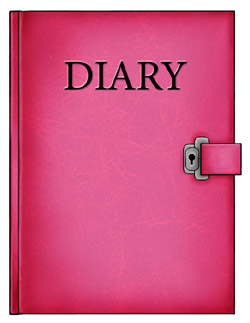

| |

Extra
Caro diario

Per molti giovani la camera rappresenta il loro spazio personale.
With the fast pace of life, how do teenagers today manage to collect their thoughts?
Non è facile!
Some teenagers keep a diary. It helps them to express and clarify thoughts and feelings in the privacy of la camera.
Blogging is the new way of keeping and sharing thoughts and feelings. If you have an interesting blog, let’s share it with everyone. If you don’t, go online to find out how to create one for italiano!
At this stage you are able to write only in the present tense in Italian. However, you can use the present tense to speak about an immediate future. This gives you more scope in your writing. Per esempio:
• Domani vado in città.
• Questo weekend vado alla spiaggia.
 |
Keep the language simple. You will be surprised as to how much you can write.
Dai, prova! Incomincia questa bella esperienza. |
Scrivi i tuoi commenti in this worksheet_B2.extra.
 |
Go to Caro diario for a list of useful phrases for diary writing. |
|
|